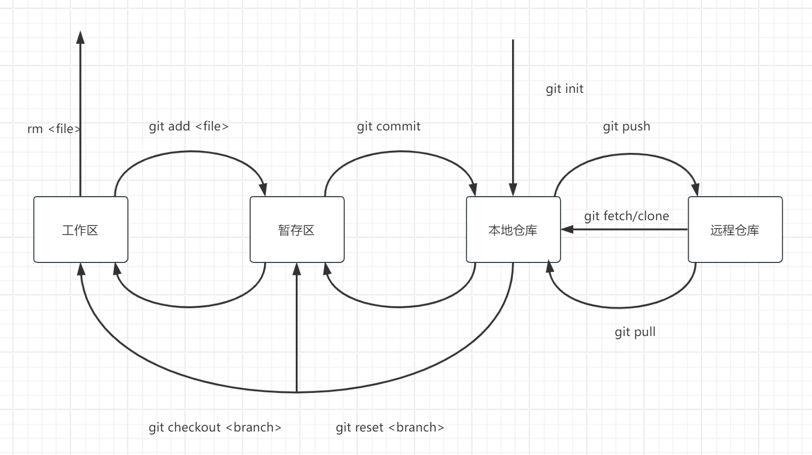
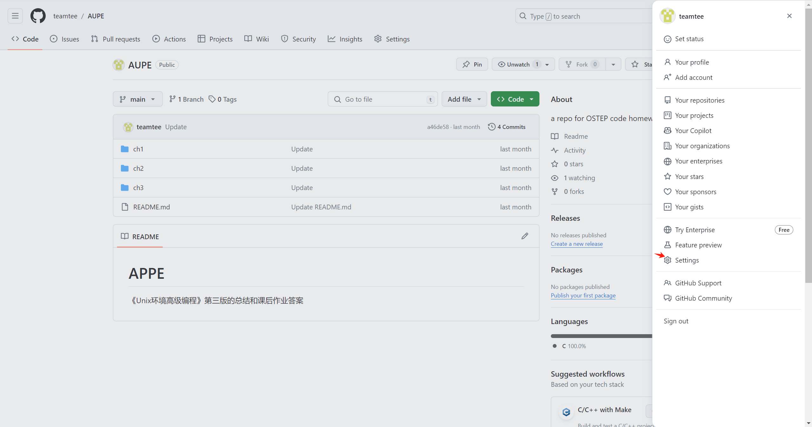

Git
这里有一份官方教程
基本概念
Git:Git是一种去中心化的版本管理工具
Svn:Svn是一种中心化的版本管理工具
Github: Github是一个用Git工具来管理的代码托管平台。Gitee同理
工作区、暂存区、仓库

基本命令
本地管理
git init 初始化本地仓库
git add . 添加追踪文件
注意第一次提交前需要配置
git config --global user.name yourname
git config --global user.email youremail
git commit -m 提交修改
git commit --amend -m "" 覆盖上一次提交
git status查看当前工作区状态
git status -s
git log查看本地仓库的提交记录
git log --oneline --graph --all
Git配置
Git通过.gitconfig文件来管理配置，通常而言会有三份，分为system，global，local三个级别，当Git需要读取配置的时候优先级是local>global>system,local文件存在于你当前的git仓库里，global存在于你的家目录，system存在于系统目录
[core]
sshCommand = C:/Windows/System32/OpenSSH/ssh.exe
[user]
email = xxx
name = xxx
git config --local --list
git config --list --show-origin
下面是一些常用的配置
git config --global core.editor emacs
git config --global https.proxy https://localhost:7890
git config --global http.proxy http://localhost:7890
分支管理
git采用的是树的形式管理你的每次提交，对于每次提交都有一个commit，这个commit是哈希生成的唯一标识，而当前的工作目录处于HEAD指针指向的commit，你可以通过分支指向不同的commit,同时git还支持tag，也就是说你可以通过commit hash、branch、HEAD、tag四种方式访问某一次体提交commit，
git branch name 创建分支
git branch -a -v 查看分支
git branch --track <remote-branchname>: 创建一个新分支，并设置它跟踪远程分支。
git branch -u origin/main
Git checkout <commit> 移动HEAD指针
Git checkout -b name 建立并切换到新分支
Git reset <commit> 移动HEAD指针和当前分支
- git reset --soft
//不修改工作区、暂存区 - git reset --mixed
//不修改工作区，修改暂存区 - git reset --hard
//修改工作区，修改暂存区
git merge <commit> 合并分支
- git merge --abort
- git merge --continue
git rebase <commit> 变基合并分支
git revert <commit> 逆向提交
文件撤销
旧命令：
git checkout <commit> -- file
git reset --soft <commit> file //不修改工作区、暂存区
git reset --mixed <commit> file //不修改工作区，修改暂存区,git reset 默认是mix的
git reset --hard <commit> file //修改工作区，修改暂存区
新命令:
git restore README.md
git restore --staged .
git restore --patch:交互式恢复更改
git restore --source=feature-branch
标签管理
git的标签分为两种：轻量标签（lightweight）与附注标签（annotated）
git tag # 查看标签
git tag -l "1.8.*" # 查看标签
git tag -a v1.4 -m "my version 1.4" # 附注标签，没有-m会知道编辑器让你编写
git show # 通过使用 git show 命令可以看到标签信息和与之对应的提交信息
git tag v1.4 # 轻量标签
git tag -d v1.4
git push origin --tags // tag必须主动push
远程管理
git clone
下面是一些常用的命令，暂时不需要记录，我们会慢慢用到
git remote
git remote add origin https://github.com/user/repo.git
git remote remove <remote>: 删除指定的远程仓库。
git remote rename <old> <new>: 重命名一个远程仓库的简称。
git remote list: 列出所有配置的远程仓库。
git remote show <remote>: 显示指定远程仓库的详细信息，包括 URL、跟踪的分支和本地分支与远程分支的对应关系。
git remote set-url <remote> <newurl>: 修改指定远程仓库的 URL。
git remote set-url origin https://github.com/user/new-repo.git
git remote set-branches: 设置或删除远程分支跟踪。
git remote set-branches --add origin/main
git remote set-branches --delete origin/main
git remote update: 从所有远程仓库获取更新的信息，但不会自动合并或修改你的工作目录。
git remote set-head <branch>: 设置远程仓库的默认分支。
git push <master>
git push --force
git pull
本地远程
我们在本地创建一个远程仓库
git clone
git remote add local_remote ...
git fetch local_remote
git branch -u local_remote/master
git checkout -b v1
git push local_remote
git branch -u local_remtoe/v1
Github远程
如果我们想要在互联网上和他人合作，一个可以联网的远程仓库是必须的Github和Gitee，或者部署在之间服务器上的Gitlab都可以
https://github.com/：任何人都可以克隆，但是无法修改仓库
git@github.com：必须持有密钥，可以修改仓库
Git上的SSh密钥认证 
拓展
.gitignore
.gitignore是用来忽略某些文件，希望他们不被Git追踪,格式规范如下：
所有空行或者以 # 开头的行都会被 Git 忽略。
可以使用标准的 glob 模式匹配，它会递归地应用在整个工作区中。
匹配模式可以以（/）开头防止递归。
匹配模式可以以（/）结尾指定目录。
要忽略指定模式以外的文件或目录，可以在模式前加上叹号（!）取反
glob 模式是指 shell 所使用的简化了的正则表达式。 支持*，？，[abc],[a-z]星号。 使用两个星号**表示匹配任意中间目录。
分支指代
HEAD～
分支合并(TODO) --continue --abort
分支合并有merge和rebase方法,git pull时会自动调用git merge,git merge首次要求设定ff或者rebase的配置值。
git stash
git pull
git stash pop